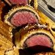

Beef Wellington

Beef Wellington is a steak dish of English origin,
made out of fillet steak coated with pate and duxelles,
wrapped in puff pastry, then baked.
Ingredients
- 2 1/2 lb beef tenderloin
- 2 tbs butter, softened
- 2 tbs butter
- 1 onion, chopped
- 1/2 cup sliced fresh mushrooms
2 oz liver pate
- 2 tbs butter, softened
- 1 package frozen puff pastry, thawed
1 egg yolk, beaten
- 1 can beef broth
- 2 tbs red wine
- salt and pepper to taste
Steps
- Preheat oven to 425f
- Thaw frozen puff pastry
- Prep onion, mushrooms, and eggs
- Place beef tenderloin in baking dish, spread butter on it
- Roast tenderloin in oven until it browns
Go back home